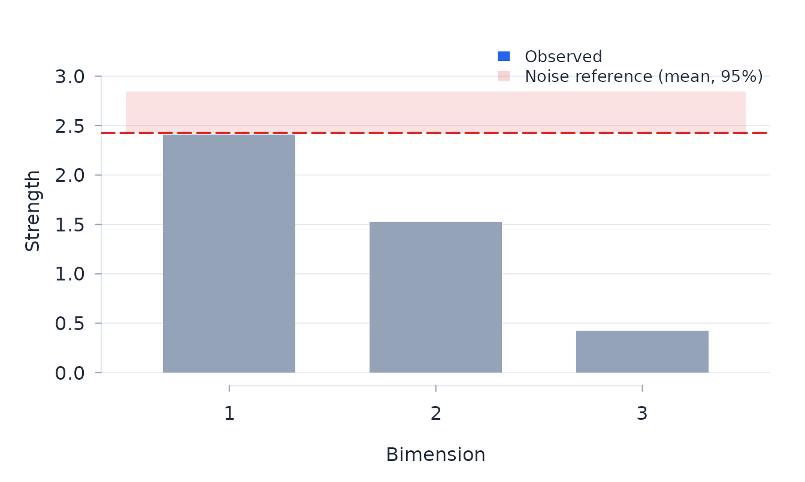

Rasch analysis of comparative judgements
Josh McGrane
Source:vignettes/paired-comparisons.Rmd
paired-comparisons.RmdFit the Bradley–Terry–Luce model
Paired-comparison data record two objects and an observed preference. In the Bradley–Terry–Luce model (Bradley and Terry 1952; Luce 1959), the log odds of choosing object A over object B are their location difference:
\[ P(A\succ B)=\frac{\exp(\beta_A)} {\exp(\beta_A)+\exp(\beta_B)}. \]
This is the conditional form of the dichotomous Rasch model (Rasch 1960; Andrich 1978). The comparison graph must connect all objects; otherwise their relative locations are not identified.
For ordered comparisons, btl fits the adjacent-category
extension
\[ \log\frac{P(Y=r)}{P(Y=r-1)}=\beta_A-\beta_B-\tau_r, \]
with thresholds symmetric under reversal of presentation order (Tutz 1986).
d <- simulate_btl(n_objects = 7, n_judges = 12,
reps_per_pair = 20, seed = 5)
fit <- btl(d, object_a = "object_a", object_b = "object_b",
winner = "winner", judge = "judge")
fit
#> Bradley-Terry-Luce analysis: 7 objects, 420 comparisons, 12 judges
#> Conditional ML: converged in 5 iterations; sandwich SEs clustered by judge
#> Object separation index 0.957; pairwise chi-square 16.84 on 15 df, p = 0.328
#> object location se comparisons wins fit_resid extreme
#> O1 -0.945 0.158 120 33 -0.419
#> O2 -0.907 0.188 120 34 0.706
#> O3 -0.515 0.149 120 45 -0.043
#> O4 -0.277 0.219 120 52 0.354
#> O5 0.498 0.158 120 75 0.178
#> O6 1.013 0.221 120 89 -0.250
#> O7 1.133 0.169 120 92 0.409
#> Judges beyond |fit residual| 2.5: 0
fit$objects
#> object location se comparisons wins infit_ms outfit_ms fit_resid df_fit
#> O1 -0.945 0.158 120 33 0.988 0.942 -0.419 118.286
#> O2 -0.907 0.188 120 34 1.075 1.104 0.706 118.286
#> O3 -0.515 0.149 120 45 0.964 0.996 -0.043 118.286
#> O4 -0.277 0.219 120 52 1.028 1.033 0.354 118.286
#> O5 0.498 0.158 120 75 0.994 1.018 0.178 118.286
#> O6 1.013 0.221 120 89 0.997 0.964 -0.250 118.286
#> O7 1.133 0.169 120 92 1.047 1.068 0.409 118.286
#> extreme
#>
#>
#>
#>
#>
#>
#> Judge residuals describe agreement with the common object scale; they are not person measures. Object fit, judge fit, targeting, and comparison information address different parts of the design and should be considered together.
fit$judges
#> judge n infit_ms outfit_ms fit_resid df_fit
#> J1 35 1.033 1.141 0.569 34.500
#> J10 35 0.855 0.870 -0.526 34.500
#> J11 35 0.810 0.747 -1.208 34.500
#> J12 35 1.140 1.174 0.634 34.500
#> J2 35 0.705 0.607 -2.066 34.500
#> J3 35 1.071 1.101 0.412 34.500
#> J4 35 1.107 1.030 0.117 34.500
#> J5 35 1.255 1.326 1.294 34.500
#> J6 35 1.252 1.337 1.462 34.500
#> J7 35 0.815 0.801 -0.853 34.500
#> J8 35 0.915 0.863 -0.636 34.500
#> J9 35 1.148 1.214 0.783 34.500
judge_surprise(fit, "J1")
#> Judge J1: 35 comparisons over 7 objects
#> Unexpected judgements:
#> O2 (loc -0.91): z = +1.98 [weak object over-rated]
btl_information(fit)
#> Paired-comparison design information: 7 objects, total 77.80
#> One-comparison Fisher information about the location gap (dichotomous: P(1 - P))
#> object location se n_comparisons information se_naive
#> O1 -0.945 0.158 120 21.495 0.216
#> O2 -0.907 0.188 120 21.777 0.214
#> O3 -0.515 0.149 120 24.066 0.204
#> O4 -0.277 0.219 120 24.805 0.201
#> O5 0.498 0.158 120 23.696 0.205
#> O6 1.013 0.221 120 20.380 0.222
#> O7 1.133 0.169 120 19.383 0.227
#> Note: se is the judge-clustered Godambe sandwich standard error; se_naive = 1/sqrt(information) is a design-only yardstick (the object's comparisons treated in isolation), not a bound -- the fitted se can sit below or above itCheck transitivity and residual structure
Circular triads (Kendall and Babington Smith 1940) identify local contradictions in the observed ordering. Residual dimensionality asks whether comparisons contain a structured second attribute after the primary scale is fitted.
When a judgment-order column is supplied, fit$dependence
reports the exposure and carry-over effects; adding
position = TRUE reports the position effect alongside them.
Use p_adj, which applies Holm’s correction across the
effects with available inference; p is retained as the raw
probability.
tr <- btl_transitivity(fit)
tr
#> Paired-comparison transitivity: 7 objects, 35 complete triples
#> Circular triads: 0 (0.0% of triples; random-tournament benchmark 25%) -> consistency 1.00
#> Kendall coefficient of consistency (complete design): 1.000
#> Per-judge consistency reported for 11 judge(s); least consistent -0.14
#> Note: the 0.25 chance rate is a random-tournament benchmark, not the fitted BTL expected circular rate; transitivity is descriptive
dimensions <- btl_dimensionality(fit, reps = 20)
dimensions
#> Paired-comparison residual dimensionality: 3 bimension(s)
#> Leading bimension strength 2.054 (88% of residual; reference 95%: 2.698) -> within the conditional reference
plot_btl_scree(dimensions)
The simulation reference for dimensionality uses twenty replicates here to keep the vignette quick. A final analysis should use enough replicates to stabilise the reference distribution.
Examine DIF across judge groups
btl_dif tests whether object locations differ across
nominated judge factors. The omnibus analysis uses judges as the
independent units. A significant term is resolved into factor-specific
object locations and pairwise logit differences. HC3 covariance allows
the precision of judge means to vary with their comparison workloads.
Omnibus and pairwise inference require at least eight judges and eight
effective judges in each factor level; estimates remain descriptive
below that boundary. The tables report both counts.
Equate panels through common objects
btl_equate aligns two calibrations that share at least
two objects. Two common objects identify a descriptive origin shift; at
least three with usable covariance information are needed for
object-drift tests. For two fitted calibrations, drift inference is
withheld until independent judges and comparisons are stated explicitly.
The shift is precision-weighted when at least two common objects have
usable variances. If they do not, the function uses the unweighted mean
location difference, labels it in shift_method, and keeps
the link descriptive.
eq <- btl_equate(current_panel, reference_panel, independent = TRUE)
eq$table
eq$equated # reference panel on the current panel's originA bank table may be used in place of reference_panel.
Marginal object standard errors are not enough for drift tests because
they omit the covariance created by the bank’s fitted origin. Attach the
joint matrix as attr(bank, "cov_location"), ordered like
the bank rows or named by object; otherwise the alignment is
descriptive. A bank treated as fixed may instead carry zero standard
errors. Dependent panels require a joint or paired bootstrap outside
this function.
Linked frames for paired comparisons
btl_efrm combines the comparative judgement model with
Humphry’s extended frame of reference structure (Humphry and Andrich
2008). Judges belong to panels, and objects belong to linked sets. For
object \(k\) in set \(s\),
\[ v_k=\alpha_s\beta_k+\kappa_s. \]
A same-set comparison in panel \(g\)
has logit \(\phi_g(\beta_A-\beta_B)\);
a cross-set comparison has logit \(\phi_g(v_A-v_B)\). Cross-set comparisons
identify the set units and origins. The cross-set likelihood holds the
within-set locations and panel units fixed. It estimates the set
transformations directly from the comparison outcomes and does not use
the finite-grid person-distribution link in
rasch_efrm().
de <- simulate_btl_efrm(
n_objects_per_set = 5, n_sets = 2,
n_judges_per_panel = 6, n_panels = 2,
reps_within = 15, reps_cross = 15,
set_units = c(1, 1.3), set_origins = c(0, 0.6), seed = 9
)
ef <- btl_efrm(
de, "object_a", "object_b", winner = "winner", judge = "judge",
panels = "panel", object_sets = attr(de, "truth")$object_sets,
se_method = "conditional"
)
ef$phi_table
#> panel phi se_log_phi t df p p_adj significant
#> panel1 0.801 0.111
#> panel2 1.249 0.111
ef$alpha_table
#> set alpha se_log_alpha t df p p_adj significant
#> set1 1.000
#> set2 1.092 0.127
ef$kappa_table
#> set kappa se_kappa t df p p_adj significant
#> set1 0.000
#> set2 0.494 0.124The default judge bootstrap resamples judges within panels and refits
both stages. The parametric bootstrap
(se_method = "bootstrap") draws independent outcomes from
the fitted model. The conditional option used above reports estimates
and conditional standard errors but withholds probabilities because it
does not propagate stage-one uncertainty into the set link. With either
bootstrap, omnibus probabilities are Holm-adjusted across the three unit
families. Individual panel-unit, set-unit and set-origin contrasts form
one separate Holm-adjusted follow-up family. Judge-bootstrap tests
require at least six judges and 5.5 effective judges in every panel, and
eight of each on a set link. Judge resamples are distributed over four
workers by default, or fewer where the system imposes a lower limit. Set
seed to reproduce the resamples. The parametric bootstrap
remains serial because its refits are inexpensive. In the application,
frame estimation runs in the background and may be cancelled.
With six judges per panel and 20 repetitions per pair, a 1,000-fit null study gave raw marginal rejection of 3.3 per cent for panel units, 6.7 per cent for set units and 6.0 per cent for set origins. Holm familywise rejection was 3.9 per cent across the omnibus decisions and 3.0 per cent across their follow-ups; set-unit coverage was 0.900. This design lies in the caution band reported by the fit. With 12 judges per panel and the default 200 resamples, raw set-unit rejection was 4.6 per cent, the empirical-to-reported SE ratio was 0.992 and coverage was 0.934 over 500 null fits. With more within- and cross-set information, finite-sample attenuation of the set-unit estimate declined: log-unit bias was -0.041 at 20 repetitions per pair, -0.016 at 50 and -0.006 at 100. Reported decisions use Holm adjustment across the three omnibus tests; the individual unit contrasts form a separate Holm-adjusted family.
A worked analysis on real data
The party
blocs case study fits the comparative judgement frame model to real
paired comparisons between political parties, with judge panels and
ideological blocs as frames. Its script ships with the package under
casestudies.
References
Andrich, D. (1978). Relationships between the Thurstone and Rasch approaches to item scaling. Applied Psychological Measurement, 2, 451–462.
Bradley, R. A., and Terry, M. E. (1952). Rank analysis of incomplete block designs: I. The method of paired comparisons. Biometrika, 39, 324–345.
Humphry, S. M., and Andrich, D. (2008). Understanding the unit in the Rasch model. Journal of Applied Measurement, 9(3), 249–264.
Kendall, M. G., and Babington Smith, B. (1940). On the method of paired comparisons. Biometrika, 31(3/4), 324–345.
Tutz, G. (1986). Bradley-Terry-Luce models with an ordered response. Journal of Mathematical Psychology, 30(3), 306–316.
Luce, R. D. (1959). Individual Choice Behavior: A Theoretical Analysis. Wiley.
Rasch, G. (1960). Probabilistic Models for Some Intelligence and Attainment Tests. Copenhagen: Danish Institute for Educational Research. (Expanded edition, 1980, Chicago: University of Chicago Press.)